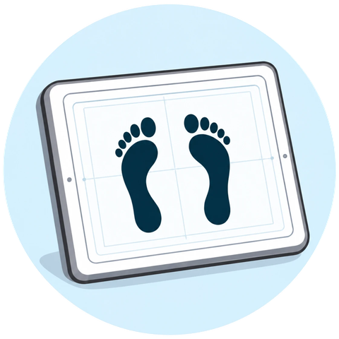
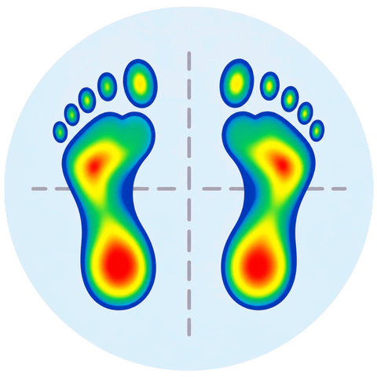

مراحل التقييم
كيف تُقيَّم مشية الطفل؟

١الفحص السريري للقدمين
تقييم شكل القدمين ووضعية الوقوف ومدى حركة المفاصل.
تحليل المشي
تقييم نمط المشي والتوازن وتناسق الحركة.

٣قياس توزيع الضغط أسفل القدمين
تحليل كيفية توزيع الضغط على القدمين أثناء الوقوف أو المشي.
تقييم وضعية الجسم
ملاحظة محاذاة الأطراف والعمود الفقري.
لا يحتاج كل طفل إلى جميع هذه الفحوصات؛ يحدد الطبيب ما يلزم لكل حالة.